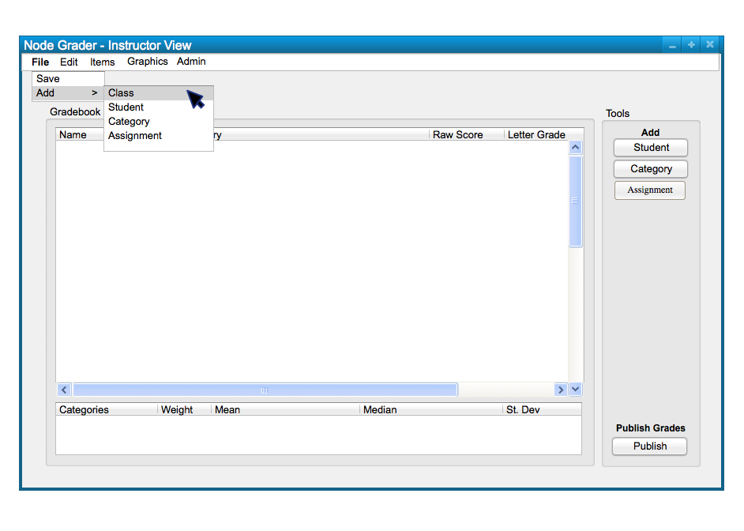

To create a new class spreadsheet, the user chooses the 'Class' menu
command. A list of file options will appear and the user chooses
'New Class...' to add a new class; this will take the form of the
following, Figure 1.

Figure 1: Add Class path.
The commands in the 'File' submenu are Save, Publish Student View, and Commit Final Grades. No response dialog apperars with the user Saves a spreadsheet. The Add submenu has the items that can be added - Class, Student, Category, and Assignment.
Figure 2 shows the response to the users selection of the
'Class New Class...' command.
Figure 2: New Class dialog.
The figure shows a dialog box for adding a new class. The dialog box only takes in a name in a text box, and can be confirmed with the 'Create Speadsheet' button below. Confirming the class will create a new tab above the spreadsheet that can be selected to switch between multiple classes if applicable.
When the user selects the 'Create Spreadsheet' button, the system
displays the newly created spreadsheet in Figure 3.

Figure 3: Class Added view.
New classes can be added and dragged to be rearranged in a preferred order. Adding a new
is required to start a new spreadhseet for editing.